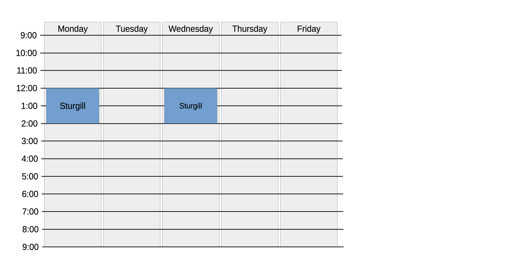

Office hours are usually held online, so you should be able to meet with the teaching staff for help even if you're not on campus; some of the teaching staff may also have in-person office hours, if you'd prefer a face-to-face meeting. For online office hours, we're using the MyDigitalHand (MDH) web application developed here at NC State. There are Instructions for MDH at the end of this document. Getting registered the first time will require a little work, but, after that, it should be easy to visit a member of the teaching staff over MDH.
All the sections of C and Software Tools go through the material in about the same order and at about the same pace. If you're having trouble, any instructor of teaching assistant should be able to help you out. Here are their office hours:
If mdh.csc.ncsu.edu isn't working, you should be able to reach me at: https://ncsu.zoom.us/j/9481092118
| Mon 12:00 - 2:00 pm | In-Person and Online via MDH |
| Wed 12:00 - 2:00 pm | In-Person and Online via MDH |
| Office Hours TBD | Online via MDH |
| Office Hours TBD | Online via MDH |
| Office Hours TBD | Online via MDH |
| Office Hours TBD | Online via MDH |
| Office Hours TBD | Online via MDH |

MyDigitalHand is used for office hours for many CSC courses. It will let you report the problem you're having and queue up (if necessary) to get attention from a member of the teaching staff.
For network security reasons, NC State requires that access to our system is only allowed via the NCSU campus network. This means that you can connect if you're on campus or connected to campus via VPN. The university has instructions for how for connecting to NC State via VPN. This will require a little bit of setup work the first time you connect, but it will pay off in the future since lots of campus resources can only be accessed through the campus network.
Once you are on the NCSU campus network, either through VPN or by being on campus, you can access the MDH site at: https://go.ncsu.edu/mdh.
Currently, the MDH site uses a self-signed certificate. This means your browser will warn you that the site is not secure. The specific details of this warning will depend on browser. For example, Safari says that my connection is not private, and I have to click on "Show Details" to get past this warning. Firefox says "Warning: Potential Security Risk Ahead", and I have to click on "Advanced.." to visit the site. You will probably get a similar warning from your browser and you will need to tell it you would like to connect to the site anyway.
The MDH site uses NC State Shibboleth for authentication. If you're not already authenticated, you may be asked to authenticate with your NCSU credentials before you can access the MDH site.
There is a little bit of one-time configuration you will need to do at the start of the semester. This will enroll you as a student in your course.
After this setup, asking a question on MDH should be easy.
Wait for your turn if needed. Once it is your turn, the instructor/TA will call you within MDH. If meeting online, they will admit you into the meeting.